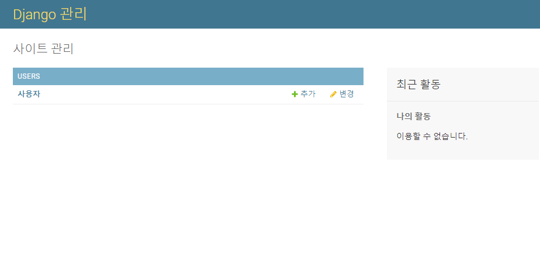

2020-03-25
Django 04. 사용자 앱 모델 생성/연결
사용자 앱인 users app을 생성하고 models, admin, urls를 설정합니다.
1. users앱 생성
manage.py가 있는 경로에 아래의 명령어로 프로젝트의 사용자계정 부분을 담당하는 users app을 생성합니다.
1
| $ django-admin startapp users
|
django 서버 실행 시 settings.py 에서 생성한 users app을 읽어올 수 있도록 settings.py의 INSTALLED_APPS에 추가해줍니다.
1
2
3
4
5
6
7
8
9
10
11
| # cs_web/settings.py
INSTALLED_APPS = [
'django.contrib.admin',
'django.contrib.auth',
'django.contrib.contenttypes',
'django.contrib.sessions',
'django.contrib.messages',
'django.contrib.staticfiles',
'users.apps.UsersConfig', # 추가 부분
]
|
*일반적으로 ‘users’ 와 같이 app이름만 추가하셔도 상관은 없으나, django convention이며 시그널 또는 apps 파일에서 Config를 사용하는 경우가 있기에 저 형식으로 코드를 추가해줍니다.
2. urls.py 생성
app별로 urls를 관리하기 위해 users 앱 내부에 urls.py를 생성한 후 아래와 같은 코드를 작성합니다.
1
2
3
4
5
6
7
8
| # users/urls.py
from django.urls import path
from . import views
app_name = 'users'
urlpatterns = []
|
생성한 urls.py를 읽어올 수 있도록 settings.py가 있는 경로의 urls.py를 아래와 같이 수정합니다.
1
2
3
4
5
6
7
8
9
| # cs_web/urls.py
from django.contrib import admin
from django.urls import path, include
urlpatterns = [
path('admin/', admin.site.urls),
path('users/', include('users.urls')),
]
|
3. models.py 작성
이제 프로젝트 사용자의 DB, 즉 django MTV패턴 중 Model 부분을 생성합니다.
django의 Model 생성 방법 중 처음부터 커스텀을 하는 방식인 AbstractBaseUser, BaseUserManger을 사용하겠습니다.
프로젝트의 사용자 DB 로직은 다음과 같습니다.
| 필드 |
역할 |
| user_id |
사용자 로그인 ID |
| password |
사용자 계정 비밀번호 |
| email |
메일주소 |
| hp |
핸드폰번호 |
| name |
이름 |
| student_id |
학번 |
| grade |
학년, 졸업생 구분 |
| level |
사이트 사용권한 |
| circles |
학과 내 동아리 |
| department |
교내 타 학과, 일반인 구분 |
| auth |
인증번호 |
| date_joined |
가입일 |
저희 과 뿐만 아니라 타 과, 일반인의 가입을 고려하여 level로 권한을 구분하였습니다.
Level 0 개발자 (모든 권한)
Level 1 : 관리자 (공지사항 작성, 게시글 삭제, 시험시간표 생성 등 사이트 관리 권한)
Level 2 : 컴퓨터공학부 사용자
Level 3 : 일반인
먼저 users 앱의 models.py에 아래와 같이 BaseUserManager를 상속받는 UserManager 클래스를 추가합니다.
1
2
3
4
5
6
7
8
9
10
11
12
13
14
15
16
17
18
19
20
21
22
23
24
25
26
27
28
29
30
31
32
| # users/models.py
from django.db import models
from django.contrib.auth.models import AbstractBaseUser, BaseUserManager, PermissionsMixin
from .choice import *
class UserManager(BaseUserManager):
def create_user(self, user_id, password, email, hp, name, student_id, grade, department, circles, auth, **extra_fields):
user = self.model(
user_id = user_id,
email = email,
hp = hp,
name = name,
student_id = student_id,
grade = grade,
department = department,
circles = circles,
auth = auth,
**extra_fields
)
user.set_password(password)
user.save(using=self._db)
return user
def create_superuser(self, user_id, password, email=None, hp=None, name=None, student_id=None, grade=None, department=None, circles=None, auth=None):
user = self.create_user(user_id, password, email, hp, name, student_id, grade, department, circles, auth)
user.is_superuser = True
user.is_staff = True
user.is_admin = True
user.level = 0
user.save(using=self._db)
return user
|
AbstractBaseUser를 상속받는 User 클래스를 추가합니다.
1
2
3
4
5
6
7
8
9
10
11
12
13
14
15
16
17
18
19
20
21
22
23
24
25
26
27
28
29
30
31
32
33
34
| # users/modesl.py
class User(AbstractBaseUser, PermissionsMixin):
objects = UserManager()
user_id = models.CharField(max_length=17, verbose_name="아이디", unique=True)
password = models.CharField(max_length=256, verbose_name="비밀번호")
email = models.EmailField(max_length=128, verbose_name="이메일",null=True, unique=True)
hp = models.IntegerField(verbose_name="핸드폰번호", null=True, unique=True)
name = models.CharField(max_length=8, verbose_name="이름", null=True)
student_id = models.IntegerField(verbose_name="학번", null=True)
grade = models.CharField(choices=GRADE_CHOICES, max_length=18, verbose_name="학년", null=True)
level = models.CharField(choices=LEVEL_CHOICES, max_length=18, verbose_name="등급", default=3)
circles = models.CharField(choices=CIRCLES_CHOICES, max_length=18, verbose_name="동아리", null=True)
department = models.CharField(choices=DEPARTMENT_CHOICES, max_length=24, verbose_name="학과", null=True)
auth = models.CharField(max_length=10, verbose_name="인증번호", null=True)
date_joined = models.DateTimeField(auto_now_add=True, verbose_name='가입일', null=True, blank=True)
is_active = models.BooleanField(default=True)
is_admin = models.BooleanField(default=False)
is_staff = models.BooleanField(default=False)
is_superuser = models.BooleanField(default=False)
USERNAME_FIELD = 'user_id'
REQUIRED_FIELDS = ['email']
def __str__(self):
return self.user_id
class Meta:
db_table = "회원목록"
verbose_name = "사용자"
verbose_name_plural = "사용자"
|
choice 필드에서 사용되고 있는 CHOICES 들을 따로 관리하기 위해 users 앱 내부에 choice.py 라는 파일을 생성한 후 아래의 코드를 추가합니다.
1
2
3
4
5
6
7
8
9
10
11
12
13
14
15
16
17
18
19
20
21
22
23
24
25
| # users/choice.py
GRADE_CHOICES = (
("선택안함", "선택안함"),
("1학년", "1학년"),
("2학년", "2학년"),
("3학년", "3학년"),
("4학년", "4학년"),
("졸업생", "졸업생"),
)
LEVEL_CHOICES = (
("3", "Lv3_미인증사용자"),
("2", "Lv2_인증사용자"),
("1", "Lv1_관리자"),
("0", "Lv0_개발자"),
)
CIRCLES_CHOICES = (
//
)
DEPARTMENT_CHOICES = (
//
)
|
(CIRCLES_CHOICES, DEPARTMENT_CHOICES는 명시하지 않겠습니다.)
models.py에서 choice.py를 import하는 코드를 추가해줍니다.
1
2
3
| # users/models.py
from .choice import *
|
마지막으로 settings.py에 아래의 코드를 추가합니다.
1
2
3
4
5
6
| # cs_web/settings.py
LOGIN_URL = '/users/login/' # 로그인 URL
LOGIN_REDIRECT_URL = '/users/main/' # 로그인 후 URL
LOGOUT_REDIRECT_URL = '/' # 로그아웃 후 URL
AUTH_USER_MODEL = "users.User" # 커스텀 인증 모델
|
4. admin.py 작성
생성한 Model을 django admin페이지에서 관리할 수 있도록 admin.py에 아래의 코드를 추가합니다.
1
2
3
4
5
6
7
8
9
10
11
12
13
14
15
16
17
18
19
20
21
| # users/admin.py
from django.contrib import admin
from .models import User
from django.contrib.auth.models import Group
class UserAdmin(admin.ModelAdmin):
list_display = (
'user_id',
'name',
'student_id',
'grade',
'circles',
'department',
'level',
'date_joined'
)
search_fields = ('user_id', 'name', 'student_id', 'department')
admin.site.register(User, UserAdmin)
admin.site.unregister(Group) # Admin페이지의 GROUP삭제
|
5. DB Migrate
아래의 명령어로 migrations 파일을 생성한 후 django DB에 적용하기 위해 migrate를 진행합니다.
1
2
| $ python manage.py makemigrations
$ python manage.py migrate
|
*app 생성 직후를 제외한 migrations는 명령 뒤에 app의 이름을 명시해주는것이 좋습니다.
6. Super계정 생성
프로젝트의 admin page에 접속해보기 위해 아래의 명령으로 최고권한 계정을 생성해줍니다. (models의 Usermanager를 통해 Level은 최고권한인 0으로 지정되게 됩니다.)
1
| $ python manage.py createsuperuser
|
runserver 명령을 통해 django 서버를 실행하고 /admin 경로로 들어가 생성한 superuser 계정으로 접속하면 아래와 같이 커스텀한대로 Admin페이지가 잘 출력되는 것을 보실 수 있습니다.
